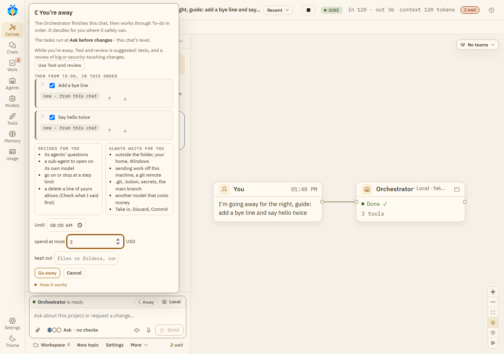
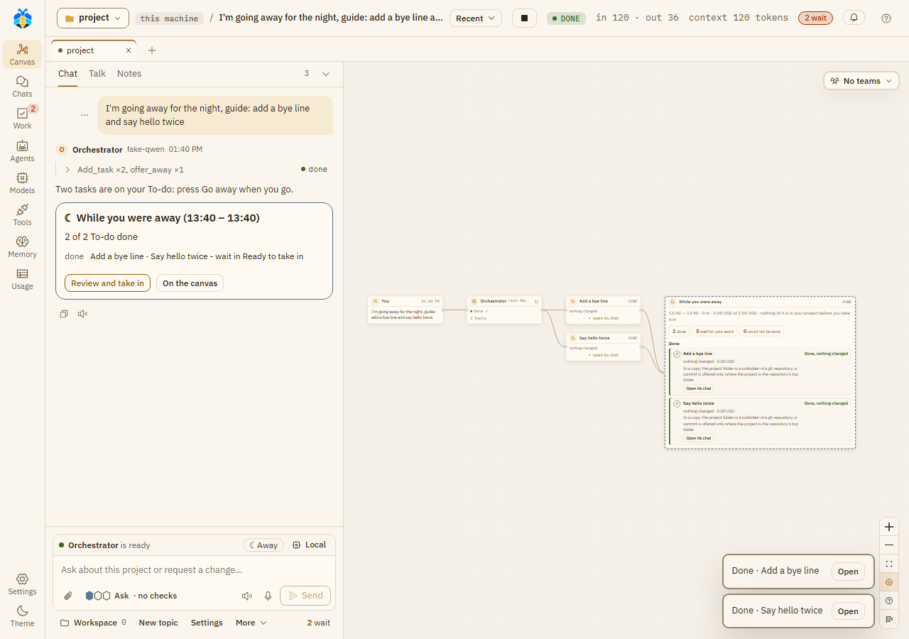

Work while you're away (☾ Away)¶
Before you leave - for an hour, an afternoon or the night - press ☾ Away on a chat's status line, or tell the Orchestrator you are going. The chat finishes its turn, then the To-do tasks you tick are worked through, one at a time, each in its own copy of the project: your project does not change while you are gone. When you are back you decide what comes in.

Work while you're away: work that runs while nobody watches.
Going away¶
☾ Away is on the line over the message box of a chat with a folder (not in a plain chat; in a chat with no turn yet it waits: "Write to the Orchestrator first: Away finishes this chat's turn"). It opens the Away panel:
- "The Orchestrator finishes this chat, then works through To-do in order.", and the level the tasks run at: this chat's.
- Then from To-do, in this order: the project's open tasks (proposed or to do). The tasks proposed in this chat are ticked already ("new · from this chat"); older ones are not ("on To-do since Mon"). Tick up to 10; Move up and Move down change the order, which is saved to To-do. A ticked proposed task counts as your OK.
- Decides for you and Always waits for you: see Questions and approvals.
- Until, spend at most and kept out: none unless you set one. If the project has a
monthly budget, the work spends at most what is left of it. Name a file or folder of the project
to keep out (up to 20): a pattern such as
src/*or a place outside the project is refused. - Where the project is not on Test and review: "While you're away, Test and review is suggested: tests, and a review of big or security-touching changes." Use Test and review sets the project to it (Settings › This project › When the work is done › After a change) - while you are away, nobody but KOLONİ's checks looks at the work (What KOLONİ checked).
- Go away, or Cancel. How it works says the rest.

The Away panel, opened from ☾ Away on the chat's status line.
Go away is refused while Stop everything holds (press Resume first), while a To-do task is at work, and from a chat with no turn.
From the chat¶
Tell the Orchestrator you are going away (to sleep, out, in any language) and what it should work on meanwhile. It does none of that work itself: it puts each piece on To-do and offers one line under its answer - "☾ Go away now? Add a bye line, Say hello twice · Until 08:00 · at most 2.00 USD" with Go away and Change (the panel, there). The line names, and Go away takes, only the tasks the Orchestrator itself put on To-do in that turn, each by its name: a task a sub-agent proposed (one of a CLI's own sub-agents too), or an earlier turn's, stays in the panel for you to tick. It names them only where KOLONİ tells the Orchestrator's own To-do work from that of its CLI's own sub-agents: an Orchestrator on an API model, or on Claude Code or GitHub Copilot CLI run Native. Any other CLI Orchestrator - Codex, agy, and Claude Code or Copilot run any way but Native - gets a line that names no task: "Tick the tasks to take in Change". The limits are only those it heard from you. Nothing starts before your Go away. Only the Orchestrator offers this, in a turn you started in a chat with a folder - not in a Plan first turn, nor while the project is away. A newer offer takes the place of one not answered yet.
While you're away¶
The status line says where it stands: "Away · To-do 1 of 2: Add a bye line · 3 decided for you · 1 waits", then "To-do 2 of 2 looked at". The chip becomes I'm back, and the message box says "Write to come back…". Away lasts until you are back: press I'm back, or write a message in any chat of the project. Once every task was looked at, you get one notification if you set them up.
How the jobs run¶
Tasks run one at a time, in the panel's order, once the chat you went away from has finished its turn (a turn that waits for your word does not hold them back). A task added meanwhile does not join. Each starts in a new chat named after it, its first message the task and what makes it done, and works in a copy of the project of its own.
- Level and model: the job's chat has the model and the permission level of the chat you went away from (the Away panel says which). Its other settings are the project's, as in any chat: who changes the files, opening sub-agents, and the rest. Where that chat is at Full auto and Check what I said first works in the project (Full auto's judge's box for your words), the Orchestrator may run, by your own written words, a command the night would otherwise wait for you on.
- Team and recipe: where you picked the teams in that chat (Manual), the job's chat has them, with their recipes.
- The copy leaves out
.git/,build/,dist/and caches, and sharesnode_modules/,.venv/andvenv/with the project. A job that needs what is not in the copy changes nothing and waits for you, its report ending "Needs the project itself: …". - A job that fails is tried once more in its chat. Failed twice, it could not be done, and the next one goes on.
- A job that waits for your word waits, and the next one goes on.
- Its notebook: a job writes in its task's notebook (its story's, where
the task is of one): how each turn ended, the files it changed, the Orchestrator's
Task note:lines and what its agents noted for the whole turn. The next night that works the task, or your own turn in its chat, goes on from it. 📓 on the task's row in its story's panel on To-do opens it.
In a git repository: each job on its own branch¶
Where the project is the top folder of a git repository, a job works on a git branch of its own,
koloni/<task> (for example koloni/fix-login-3f2a; koloni/task-3f2a where the task's title holds
a secret KOLONİ knows, or one's shape - a branch's name goes to origin with its push), in a worktree
of your repository, and commits there as it goes. How Go away finds the project decides it, once for
every job:
| The project | The job | In the morning |
|---|---|---|
| No git; a folder inside a repository; HEAD on no branch; no commit yet; a merge or rebase under way; a git submodule; files in Git LFS | works in a copy, as above | Take in; its row says "In a copy: …" and why |
A git repository with no remote called origin |
works on its branch, commits there | "No remote: merge it with git, or Take in." |
A git repository with an origin |
works on its branch, commits there | its push waits under Waiting for you |
- Its first message says so: the branch's name, commit as you go, do not push - KOLONİ pushes this
branch when you say yes. A CLI's instructions say the same. Only the files git tracks are in the
worktree; what git ignores (
.env, data, build output) is read in the project. - Its git:
git status,diff,log,addandcommiton its own branch run without a card. Its owngit pushis refused with "KOLONİ pushes this branch when the user says yes: go on" - no card, nothing parked. What reaches the rest of your repository (switching branches, reset, stash, fetch, config) is parked for you as any card is. - A script's push - a test or a build step that runs
git push- fails inside the job's worktree: KOLONİ starts its commands with git set to push nowhere (a fetch still works). That is a safeguard, not a wall: see Known limits. - Where git will not when the job starts (HEAD detached since Go away, say), it works in a copy; its Orchestrator is told why, and its row says "In a copy: …".
- At its end KOLONİ commits what the job left on the branch ("Orchestrator: fix the login") and keeps
the worktree for your Take in - the same card as a copy's, file by file. Taking all of it in, or
Discard, deletes the worktree and the branch, and the row says so instead of its commits: "Its branch
koloni/fix-login-3f2a was deleted: its work was taken in." Nothing of it goes into your project by
itself, at Full auto too. A file that holds a secret KOLONİ knows - in its content or its name: a provider key you saved,
an MCP server's variable a secret's name holds, the page's key, one of the environment's, one given
on a card, or any value with a secret's shape (
ghp_…,sk-…, a password in an address) and the token or password it holds alone - is left out of that commit and stays in the job's worktree only; so is a file named as a secret, whatever it holds:.env.sample,api_keys.json,token.txt, a data file in acredentialsorsecretsfolder (which names). The job's chat and its push row say which ("· left out: conf.txt (a secret KOLONİ knows, or named as one)"), and the rest of the work goes on. A file an agent committed on the branch itself is on the branch, not left out: the chat and the row do not call it left out, and Run refuses the push ("prov.txt on the branch holds a secret KOLONİ knows - take it off the branch first") - or, for one only named as a secret, asks first ("credentials.yaml on the branch is named as a secret (its agent committed it): Run anyway pushes it"). Such a secret never deletes the job's work: only a secret given on a card during the job, which an agent committed on the branch itself, has the branch deleted, and the chat says so. - Its second try after a failure, and the turn that goes on after your decisions in the morning, work in the same worktree, on the same branch.
- KOLONİ also notes your repository's branches, stash, tags and remotes as the job starts and ends: anything that changed outside the job's branch meanwhile is on its row - "Changed outside its branch: main 1a2b3c4 → 3c4d5e6", "git's config changed during the job" - for you to look at. KOLONİ does not undo it: it may be yours.
The top bar shows "☾ Away · To-do 2 of 4" with I'm back and Stop all, and "· until 07:00" after it when you set a stop time. Ready for you's report shows the jobs too: since when, what they spent against the limit, and each job as it stands, with what its agents are doing right now. A job's chat says at the top when its jobs started, with a link back to their report.
Stricter rules while you're away¶
- Commands follow the job chat's level. Below Full auto, a command no rule covers is parked for you (see Questions and approvals): it does not run, and the job goes on without it. At every level these are parked too: a command that deletes, overwrites or sends something off the machine; one that hands a command to a shell or another program; and one that installs into the project's shared dependency folders.
- Ordinary file changes in the job's copy never ask: they are kept for your Take in. Files that steer agents, secret files and places outside the project wait for you as in a watched turn, and the job with them.
- Kept-out places: a write to one, or a command that names one, is refused, and the try is on the report.
- No MCP server tools are used.
- CLIs: a CLI working with its own tools that is not started in the job's copy, or not held to it (Copilot working Native, agy when it may write), cannot work on a job: "… cannot work on a job while you're away".
- At Full auto, where Check what I said first works, a command that deletes is first checked
against your own words - your preferences, the project's saved rules and your messages in the chat
you went away from, never the task's words - and runs in the job's copy without a card where a line
of yours names it. Only a delete in the folder, on one line: a command of more than one line or
continued (a backtick or a backslash at a line's end), a line that also sends work off the machine
or touches a git remote, Docker's prune or volumes, and a delete of a file that steers agents
(
AGENTS.md,CLAUDE.md) keep their card - in the chat you went away from as in a task's. See Permissions. - At Full auto, with Full auto's judge on (the default), a command the list does not stop is first looked at by a small model, reading the chat you went away from: one it finds risky is parked for you with its sentence, "KOLONİ's judge: …", and the job goes on. (In a chat you watch it is refused unless you chose Ask me; while you're away it is always parked.)
Questions and approvals¶
A card no longer stops a job while you're away. A command's card - whatever its reason: no rule covers it, it deletes or sends something off the machine, its copy asks for it, Full auto's judge finds it risky - is parked: it does not run, the agent is told "KOLONİ parked this for the user, who is away: run "…". It did not run. Do what you can without it, and say in your summary what waits.", and the job goes on. A command a CLI run Native asks for with a tool of its own is parked the same way. The job's copy is kept for the morning even where it changed nothing. When the job has done what it can, it waits - "2 parked" - and the next job starts.
While you're away the Orchestrator decides at once, in the chat you went away from and in the
tasks' chats, what it may decide for you (another chat of the project keeps its own minutes): an
agent's question, a recipe's "Ask me", opening a sub-agent on its role's own model, and going on or
stopping at a step limit. The cards already waiting when you press Go away are decided then. In a job,
its own questions go to it too: "The user is away. Decide yourself and say what you assumed in one
sentence. Only if the answer is something only the user can know (a password, an account, a personal
fact), answer park." Its answer is on Ready for you, in its Decided for you column. What it
answers park - and a question it could not answer - is parked for you, and the job goes on. In the
chat you went away from,
its own questions wait for your return. It does not answer once the project is over its monthly budget
or a provider is over its limit.
These still wait for you, and the job with them (the next job goes on): changes of files that steer agents or are secret, the web, secrets, folders, another model that may cost money, new roles and skills, Take in, Discard, Commit. See Answering for you.
Only a job of an Away that runs parks: after I'm back, Stop all or the Away's end, the next card of a job still at work waits for you as before. KOLONİ's own commands (its checks) are never parked. A job that waits is shown under Waits for your word, on the report and in Ready for you.
Step limits while away¶
Nobody is there to answer a Continue / Stop here card in a job, so none comes (in the chat you went away from, the Orchestrator decides that card at once):
- A sub-agent that reaches its step limit stops. The job's Orchestrator is told its part is not done, and may tell it once to go on, with a new step limit.
- One that stopped at its role's own limit, or stops again, ends. The job's Orchestrator hands what is left to another agent, or says in its report what is left undone. The job can still count as done: read its chat.
- The job's Orchestrator counts no steps. If it goes round in circles (the same call failing the same way 5 times, or 10 calls in a row bringing nothing new), the job fails with that reason, is tried once more in its chat, and the night goes on with the next job.
See Step limits.
What stops the jobs¶
Away ends when:
- you are back: I'm back, or a message of yours (the job at work finishes; its cards then wait for you);
- the stop time comes, if you set one ("Stopped at 07:00, the time you set.");
- it has spent its money - what the tasks' chats and the chat you went away from spent since Go away ("Stopped at 5.02 of 5.00 USD, the spend limit."); the chat's turn at work is stopped too;
- the project is over its monthly budget, or the Orchestrator's provider is over its limit, when the next job is about to start;
- you press Stop all ("Stopped by you.");
- KOLONİ is closed ("Stopped: KOLONİ was closed while you were away.");
- the next job cannot start.
The time and the money are checked before each model step. A clock also watches the stop time and each job's hours at most, so a long command is cut at them too. Its minutes with nothing moving do not run out while a command or a model step of it is under way, an agent below the Orchestrator is at work, or it waits for your word: those have limits of their own. When the jobs stop, the job at work stops, its work kept in its copy, and is shown as Stopped. A job that waits for your word goes on waiting - but Stop all stops it too. When KOLONİ is closed, the jobs at work and those that wait count as could not be done: answer what waits before you close KOLONİ.
Stop everything in the top bar holds the jobs instead of ending them: the job at work and a job that waits for your word are stopped, the next job waits for Resume, and the time and money you set still end them.
If you set up notifications, you get one when every task was looked at, and one when a limit or Stop all ends Away - none when you come back yourself.
When you're back¶
The chat you went away from has one summary: "While you were away (23:10 – 07:42): 2 of 2 To-do done · 3 decided for you · 1 waits · 0.84 USD", what was done (waiting in Ready to take in), what was decided for you, Waiting for you, what waits (with Allow and go on / Refuse), Review and take in and On the canvas. KOLONİ opened again opens on Ready for you, on the night, until you have seen it there or its report on the canvas - never over a page you opened before the night was read.
The night on Ready for you¶
KOLONİ opened after the night has ended opens on Ready for you, at its first look at the night - never taking you off a page you opened before that look; once the night has been on screen (here, or its report on the canvas), KOLONİ opens as you left it. Once the night has ended, the page opens on it: "Last night, 23:10 to 07:42" ("Night of Tue 24 Nov, …" once it ended more than a day ago), a time axis, and a lane for each job. A job's bar runs from when its first turn of the night began to when its last one ended - green where it finished, hatched honey where it waits for you, a dashed edge where it was stopped or could not be done. Each decision made for you in the job's chat that night - every one, however many - is a small hexagon on its lane, at its time, in the colour of who decided: filled while it waits for your OK, an outline once you have seen it. The strip draws only what KOLONİ's records hold: a job that never started, or whose turn is still open, has no bar and is still listed; a decision made in no job's chat (the chat you went away from) is on no lane. Under the lanes: what the marks mean, Not checked and what the night spent ("Spent 1.40 USD of 5.00 USD").
- Not checked: N things opens on the list, job by job, in the words of each job's last Checked section of the night: tests not run (a guessed command while you were away, among others), a kind's check, the Reviewer or the live or browser try not done, After a change set to Nothing - and, where its push went, that GitHub's checks on it were not waited for (KOLONİ does not wait for them yet). A job with no Checked section of the night says "not known", never "nothing".
- The whole report opens the night's report on the canvas.
- Copy report as Markdown copies the whole night - named by its day, its jobs, what waits for you, what was decided for you on its jobs, what was not checked and what it spent - for a pull request's description. Every job's, agent's and model's word goes in a code span, masked as the screen shows it: a parked command too, as the list shows it.
What the night parked is on the page too, first in its list and under Last night: the push first, then the commands and questions - the rows of Waiting for you, with their own words. A job that waits only for what it parked is those rows, not a row of its own as well.
Waiting for you¶
One list of everything the jobs parked, task by task in the night's order, each in the order it was
parked: the command whole (never cut, in a fixed font; a secret KOLONİ knows, or one known by its
shape - a Bearer token, a password in an address - shows as ***, and what runs is still the line
as recorded), or the question; why, in KOLONİ's words (the
card's reason, the judge's sentence, the Orchestrator's reason in quotes); and a warning where it reads
like orders to a model. It is in Ready for you's waiting list (first, the push first
of all), on the summary and on the report.
- Run or Reject a command; a question takes one of its options, or a line and Answer.
- Stop this task, on the task's line: what waits of it is closed, the task is stopped, and nothing of it runs.
- You decide only once you are back (I'm back), and only while the task's job is not at work. A row
that cannot be decided now says why: "Needs the project itself: Take in first" (a
gitline, or one namingbuild/,dist/or another folder a copy leaves out - a copy has no.git; in a job on its branch agitline runs in its worktree), "Its copy is gone: there is nothing to run it in" (you discarded it - Reject still works), "Where it would run is not known: Reject it, or run it yourself" (a CLI that did not say its folder), "The project runs commands elsewhere now: Reject it, or set that back" (Docker or this machine, changed since), "Its CLI's own shell would run it: Reject it, or run it yourself" (a line Claude Code, Codex or another CLI asked to run in its own shell), "A server line: run it yourself". Each row says where it would run - the job's copy, or the project itself - its card's words, and "Runs a file an agent wrote" where it does. - Once every row of a task is decided, KOLONİ runs what you said Run, in the order it was parked,
as it was recorded - the same line, its folder, the job's kept copy (or, where you took some of that
copy in before your Run, the project itself), its time limit - with no card. Just before each, it
looks again: a line whose copy was taken in or discarded after your Run ("its copy was taken in
after your Run - run it yourself") does not run; and if anything in the job's copy changed after a
line was parked - by an agent, a command, or an earlier line of this morning - Run does not run it
("the job changed files after this was parked: run it yourself", on the list as soon as it is
known; where it runs in the project after a Take in, "its work was taken in after this was parked: run
it yourself"). A command that runs none of the project's code (
curl,wget, a file command) is the exception. A program an agent wrote is still refused, and so is a line naming a place you kept out. A Take in or Discard under way is waited for; while the lines run, the copy can be neither taken in nor discarded. Stop in the job's chat, or Stop everything, stops a line that runs, and the task (Try again works it). A message of yours waiting behind it then goes ahead: a turn of yours in the job's chat, which marks the job done once it ends, as any turn there does. - Then the same Orchestrator goes on in the same chat, in one turn, on KOLONİ's message: "KOLONİ: the user decided: ran "npm test" ("…"); rejected "git push"; answered "Which database?": "Postgres". Go on with the task." - what a line printed, and your answer, in quotes; a line that timed out or was stopped says so. It is a job's turn: held to a job's hours, in the kept copy its rows were parked in
- never a later turn's of the chat, a message of yours, say - (a fresh one where you took some of it in), its work kept for your Take in - at Full auto too - and the judge looks at its commands. It does not start where the project is over its monthly budget: the job then waits with why. A message of yours in that chat meanwhile waits behind it.
- A job's push (a git repository with an
origin): "Push koloni/fix-login-3f2a to origin (github.com/…) — one commit by KOLONİ, 5 files · checks ✓ at 3c4d5e6", and "· opens a pull request into main" where the project's How a team's finished branch reaches yours is Open a pull request (Settings). Run pushes the branch's work as ONE commit by KOLONİ onto where it leftmain- never the agents' own steps, never what you had not committed when it began - and opens the pull request; Reject leaves the branch as it is. It waits for the task's other rows and its going-on turn ("Waits for this task's other decisions and its going-on turn"), and is made again with the branch's new commit after that turn: a yes is never for a commit you did not see. Just before it pushes, KOLONİ looks again: a branch deleted or moved since the job ended, a secret KOLONİ knows in what would go up - a file's content or its name, one an agent committed on the branch itself ("take it off the branch first") -, a branch of that name on origin ("origin already has a branch named …"), commits of yours onmainnot on origin ("push main first"; KOLONİ asks origin itself, never your remote-tracking branches), origin'smainahead of what you fetched ("fetch first"), an address git's config rewrites, the project on another branch than the one the job ended on, a branch changed since you read the row - nothing goes up, the row says why and waits, to try again once that is set right. Where a push to origin goes elsewhere now than when the job began, git's config or hooks changed since then, something changed outside the branch (its branches, stash, tags, remote-tracking branches, any other ref, git's own files), it changed a place you kept out, or it began from your work not committed, the row shows that first: Run anyway pushes - on Ready for you the row's words say what they do: Push (Push and open PR where the project's way is a pull request), Not now and Push anyway. The row names the address a push went to as the job began. Take in or Discard of the job closes the row ("Its work was taken in or discarded: nothing to push"); taking all of it in deletes the branch.

Back: the summary in the chat you went away from, and the report on the canvas.
The report shows when the jobs ran, what they spent and why they ended; nothing of it is in your project before you take it in. Its sections are Done, Waits for your word, Could not be done, Stopped, Not started, Decided for you (each of them is on Ready for you too, in its Decided for you column, with OK, Change and - once the agent that asked has finished - Change and redo: see Decisions), Proposed while you were away, not started (with Add to To-do or Dismiss) and Kept out, as you asked (what tried to change those places, refused).
Each job row says what its reviews found, and warns where its copy changed a place you kept out, or a file another job changed too. A job that changed nothing is "Done, nothing changed"; one whose work you took in or discarded says which files ("taken in: hello.py", "discarded: hello.py"). For each job:
- Allow and go on or Refuse, when it waits for a change, a web request or an agent to open. A folder or a secret is answered in its chat: Open its chat. The job then goes on in its copy. What it parked is under Waiting for you.
- Take in brings its work into the project; Take in all takes in every done job's work. Where two jobs changed one file, the two are joined line by line where their lines do not clash. A clashing line is not taken: the card of the job's kept copy, in its chat, decides it.
- Try again, for a job that could not be done or was stopped, once you are back. It runs in the job's chat as an ordinary turn, not in a copy: its changes go into the project as that chat's level says.
- See the changes or Open its chat.
Ready for you's report shows the same jobs, with a row per job and what waits for you.
See A job while you're away for the steps from going away to taking the work in.